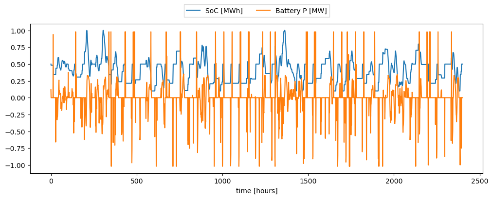
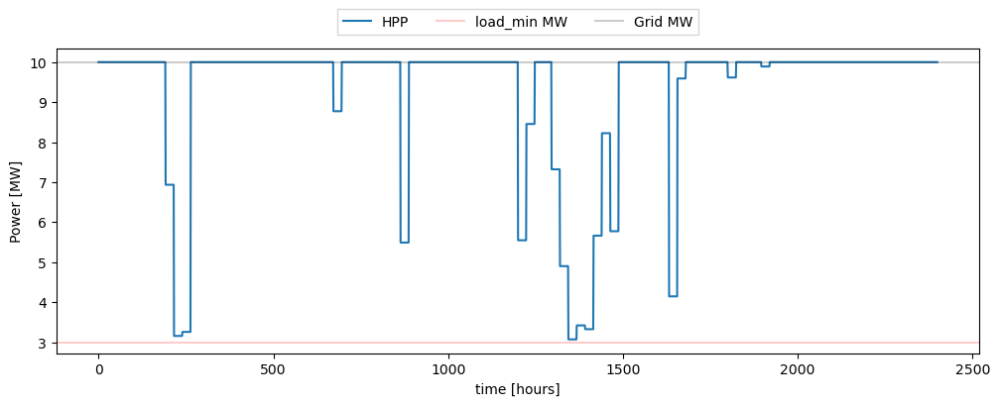
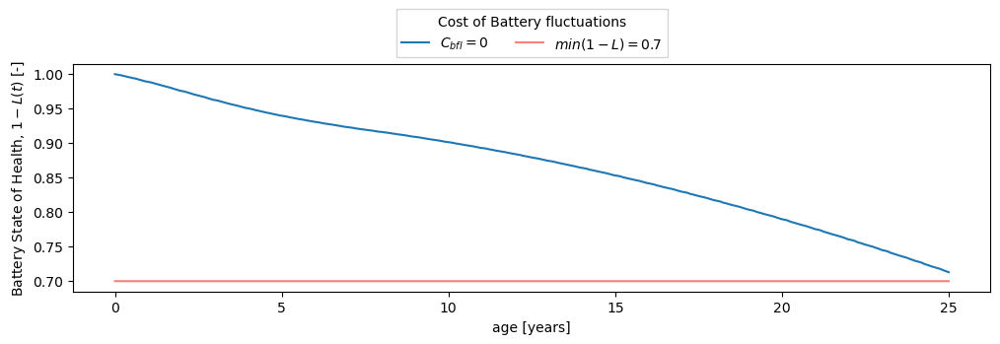
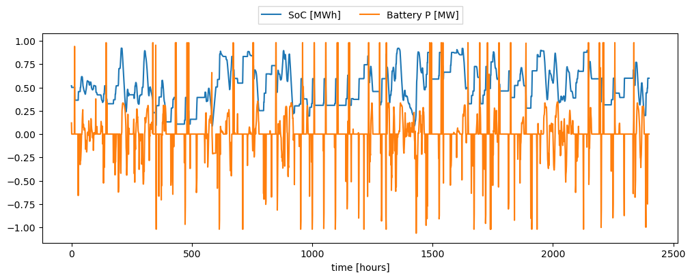
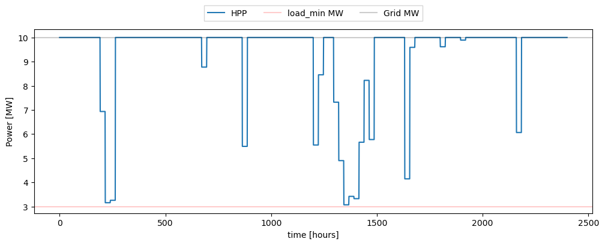

Example: Sizing a plant to meet constant electrical load
This tutorial provides a practical example of sizing a hybrid power plant (HPP) to meet a constant electrical load. It includes steps for evaluating the load requirements, designing the HPP to meet these needs, and optimizing the configuration for efficient operation. This guide is useful for scenarios where consistent energy supply is critical.
Imports
Install hydesign if needed. Import basic libraries. Import HPP model assembly class. Import the examples file path.
[1]:
# Detect if running in Kaggle
import os
if os.environ.get('KAGGLE_KERNEL_RUN_TYPE'):
mypaths = !python -c "import sysconfig; print(sysconfig.get_paths()['purelib'])"
mypath = mypaths[0]
!pip install trash-cli
!trash $mypath/numpy*
!pip install --upgrade numpy
!pip install finitediff
import os
os.kill(os.getpid(), 9)
[2]:
# Install hydesign if needed
import importlib
if not importlib.util.find_spec("hydesign"):
!pip install git+https://gitlab.windenergy.dtu.dk/TOPFARM/hydesign.git
[3]:
import pandas as pd
import numpy as np
from hydesign.assembly.hpp_assembly_constantoutput import hpp_model_constant_output as hpp_model
from hydesign.examples import examples_filepath
import matplotlib.pyplot as plt
Evaluation
First we evaluate a specific configuration. The minimum load constraint is implemented as a penalty, so not meeting it will result in severly penalized financial metrics as seen below:
[4]:
examples_sites = pd.read_csv(f'{examples_filepath}examples_sites.csv', index_col=0, sep=';')
name = 'France_good_wind'
ex_site = examples_sites.loc[examples_sites.name == name]
longitude = ex_site['longitude'].values[0]
latitude = ex_site['latitude'].values[0]
altitude = ex_site['altitude'].values[0]
input_ts_fn = examples_filepath+ex_site['input_ts_fn'].values[0]
sim_pars_fn = examples_filepath+ex_site['sim_pars_fn'].values[0].replace('.yml','_benchmark.yml')
H2_demand_fn = examples_filepath+ex_site['H2_demand_col'].values[0]
PPA = 40 # Euro/MWh
hpp = hpp_model(
latitude,
longitude,
altitude,
num_batteries = 10,
work_dir = './',
sim_pars_fn = sim_pars_fn,
input_ts_fn = input_ts_fn,
ppa_price = PPA,
load_min = 3, #MW
load_min_penalty = 100, #MEuro
battery_deg = True,
)
x=[35.0, 300.0, 10.0, 3, 7.0, 30, 25.0, 180.0, 1.0, 30, 7, 10.0]
Fixed parameters on the site
-------------------------------
longitude = -0.864258
latitude = 48.744116
altitude = 302.0
[5]:
outs = hpp.evaluate(*x)
[6]:
hpp.print_design(x, outs)
Design:
---------------
clearance [m]: 35.000
sp [W/m2]: 300.000
p_rated [MW]: 10.000
Nwt: 3.000
wind_MW_per_km2 [MW/km2]: 7.000
solar_MW [MW]: 30.000
surface_tilt [deg]: 25.000
surface_azimuth [deg]: 180.000
DC_AC_ratio: 1.000
b_P [MW]: 30.000
b_E_h [h]: 7.000
cost_of_battery_P_fluct_in_peak_price_ratio: 10.000
NPV_over_CAPEX: 0.067
NPV [MEuro]: 3.399
IRR: 0.063
LCOE [Euro/MWh]: 57.963
CAPEX [MEuro]: 50.936
OPEX [MEuro]: 0.944
Wind CAPEX [MEuro]: 30.446
Wind OPEX [MEuro]: 0.809
PV CAPEX [MEuro]: 6.900
PV OPEX [MEuro]: 0.135
Batt CAPEX [MEuro]: 10.605
Batt OPEX [MEuro]: 0.000
Shared CAPEX [MEuro]: 2.985
Shared Opex [MEuro]: 0.000
penalty lifetime [MEuro]: 0.254
AEP [GWh]: 83.249
GUF: 0.950
grid [MW]: 10.000
wind [MW]: 30.000
solar [MW]: 30.000
Battery Energy [MWh]: 210.000
Battery Power [MW]: 30.000
Total curtailment [GWh]: 2628.341
Awpp [km2]: 4.286
Apvp [km2]: 0.368
Plant area [km2]: 4.286
Rotor diam [m]: 206.013
Hub height [m]: 138.006
Number of batteries used in lifetime: 1.000
Break-even PPA price [Euro/MWh]: 37.963
Capacity factor wind [-]: 0.607
[7]:
G_MW = hpp.prob['G_MW']
b_P = hpp.prob['b_P']
b_E = hpp.prob['b_E']
load_min = hpp.prob['load_min']
b_E_SOC_t = hpp.prob.get_val('ems.b_E_SOC_t')
b_t = hpp.prob.get_val('ems.b_t')
price_t = hpp.prob.get_val('ems.price_t')
wind_t = hpp.prob.get_val('ems.wind_t')
solar_t = hpp.prob.get_val('ems.solar_t')
hpp_t = hpp.prob.get_val('ems.hpp_t')
hpp_curt_t = hpp.prob.get_val('ems.hpp_curt_t')
grid_MW = hpp.prob.get_val('ems.G_MW')
n_start = int(24*365*7.2)
n_days_plot = 100
plt.figure(figsize=[12,4])
# plt.plot(price_t[:24*n_days_plot], label='price')
plt.plot(b_E_SOC_t[n_start:n_start+24*n_days_plot]/b_E, label='SoC [MWh]')
plt.plot(b_t[n_start:n_start+24*n_days_plot]/b_P, label='Battery P [MW]')
plt.xlabel('time [hours]')
plt.legend(loc='upper center', bbox_to_anchor=(0.5, 1.15),
ncol=3, fancybox=0, shadow=0)
plt.figure(figsize=[12,4])
# plt.plot(wind_t[n_start:n_start+24*n_days_plot], label='wind')
# plt.plot(solar_t[n_start:n_start+24*n_days_plot], label='PV')
plt.plot(hpp_t[:24*n_days_plot], label='HPP')
# plt.plot(hpp_curt_t[:24*n_days_plot], label='HPP curtailed')
plt.axhline(load_min, label='load_min MW', color='r', alpha = 0.2)
plt.axhline(grid_MW, label='Grid MW', color='k', alpha = 0.2)
plt.xlabel('time [hours]')
plt.ylabel('Power [MW]')
plt.legend(loc='upper center', bbox_to_anchor=(0.5, 1.15),
ncol=5, fancybox=0, shadow=0)
plt.show()
N_life = hpp.sim_pars['N_life']
life_h = N_life*365*24
age = np.arange(life_h)/(24*365)
SoH = np.copy(hpp.prob.get_val('battery_degradation.SoH'))
plt.figure(figsize=[12,3])
plt.plot( age, SoH, label=r'$C_{bfl}=0$')
plt.plot( age, 0.7*np.ones_like(age), label=r'$min(1-L) = 0.7$', color='r',alpha=0.5)
plt.xlabel('age [years]')
plt.ylabel(r'Battery State of Health, $1-L(t)$ [-]')
plt.legend(title='Cost of Battery fluctuations',
loc='upper center', bbox_to_anchor=(0.5, 1.27),
ncol=3, fancybox=0, shadow=0)
plt.show()
b_E_SOC_t = hpp.prob.get_val('ems_long_term_operation.b_E_SOC_t_with_deg')
b_t = hpp.prob.get_val('ems_long_term_operation.b_t_with_deg')
price_t = hpp.prob.get_val('ems.price_t')
hpp_t = hpp.prob.get_val('ems_long_term_operation.hpp_t_with_deg')
hpp_curt_t = hpp.prob.get_val('ems_long_term_operation.hpp_curt_t_with_deg')
grid_MW = hpp.prob.get_val('ems.G_MW')
n_start = int(24*365*7.2)
n_days_plot = 100
plt.figure(figsize=[12,4])
# plt.plot(price_t[:24*n_days_plot], label='price')
plt.plot(b_E_SOC_t[n_start:n_start+24*n_days_plot]/b_E, label='SoC [MWh]')
plt.plot(b_t[n_start:n_start+24*n_days_plot]/b_P, label='Battery P [MW]')
plt.xlabel('time [hours]')
plt.legend(loc='upper center', bbox_to_anchor=(0.5, 1.15),
ncol=3, fancybox=0, shadow=0)
plt.figure(figsize=[12,4])
# plt.plot(wind_t[n_start:n_start+24*n_days_plot], label='wind')
# plt.plot(solar_t[n_start:n_start+24*n_days_plot], label='PV')
plt.plot(hpp_t[:24*n_days_plot], label='HPP')
# plt.plot(hpp_curt_t[:24*n_days_plot], label='HPP curtailed')
plt.axhline(load_min, label='load_min MW', color='r', alpha = 0.2)
plt.axhline(grid_MW, label='Grid MW', color='k', alpha = 0.2)
plt.xlabel('time [hours]')
plt.ylabel('Power [MW]')
plt.legend(loc='upper center', bbox_to_anchor=(0.5, 1.15),
ncol=5, fancybox=0, shadow=0)



[7]:
<matplotlib.legend.Legend at 0x7ffe9cf45c00>


[17]:
hpp_t = hpp.prob.get_val('ems_long_term_operation.hpp_t_with_deg')
penalty_t_with_deg = hpp.prob.get_val('ems_long_term_operation.penalty_t_with_deg')
df_aux = pd.DataFrame(
index = range(len(hpp_t)),
)
df_aux['day'] = np.floor(df_aux.index.values/24)
df_aux['hpp_t'] = hpp_t
df_aux['penalty_t'] = penalty_t_with_deg
aux_mins = np.repeat( df_aux.groupby('day').min().values, 24,axis=0)
df_aux['min_hpp_day'] = aux_mins[:,0]
load_min = hpp.load_min
# Get the number of days per year where the load is not meet
print ( len(df_aux.loc[df_aux['min_hpp_day']<load_min, 'day'].unique()) )
# get the year fraction when they start to occur
df_aux.loc[df_aux['min_hpp_day']<load_min, 'day'].unique()/365
106
[17]:
array([ 4.92876712, 5.74246575, 5.93150685, 6.74520548, 6.93424658,
7.74794521, 7.9369863 , 8.36438356, 8.75068493, 8.93972603,
9.36712329, 9.75342466, 9.94246575, 10.36986301, 10.75616438,
10.94520548, 11.37260274, 11.75890411, 11.94794521, 12.37534247,
12.68493151, 12.76164384, 12.95068493, 13.37808219, 13.68767123,
13.76438356, 13.95068493, 13.95342466, 14.38082192, 14.69041096,
14.76712329, 14.95342466, 14.95616438, 15.13972603, 15.38356164,
15.69315068, 15.76986301, 15.95616438, 15.95890411, 16.14246575,
16.38630137, 16.69589041, 16.77260274, 16.95890411, 16.96164384,
17.14520548, 17.3890411 , 17.69863014, 17.77534247, 17.96164384,
17.96438356, 18.14794521, 18.39178082, 18.70136986, 18.77808219,
18.83561644, 18.96438356, 18.96712329, 19.15068493, 19.39452055,
19.70410959, 19.78082192, 19.83835616, 19.8630137 , 19.96712329,
19.96986301, 20.15342466, 20.39726027, 20.70684932, 20.78356164,
20.84109589, 20.86575342, 20.96986301, 20.97260274, 21.15616438,
21.4 , 21.70958904, 21.78630137, 21.84383562, 21.86849315,
21.97260274, 21.97534247, 22.15890411, 22.40273973, 22.71232877,
22.7890411 , 22.84657534, 22.87123288, 22.97534247, 22.97808219,
23.16164384, 23.40547945, 23.71506849, 23.79178082, 23.84931507,
23.8739726 , 23.97808219, 23.98082192, 24.16438356, 24.40821918,
24.71780822, 24.79452055, 24.85205479, 24.87671233, 24.98082192,
24.98356164])
Sizing
To optimize the size of the different technologies in order to meet the load we can do a sizing optimization:
[8]:
from hydesign.Parallel_EGO import get_kwargs, EfficientGlobalOptimizationDriver
import os
[7]:
n_procs = int(os.cpu_count())
[8]:
inputs = {
'example': 9,
'name': None,
'longitude': None,
'latitude': None,
'altitude': None,
'input_ts_fn': None,
'sim_pars_fn': None,
'opt_var': "NPV_over_CAPEX",
'num_batteries': 10,
'n_procs': n_procs - 1,
'n_doe': 20,
'n_clusters': 5,
'n_seed': 0,
'max_iter': 2,
'final_design_fn': 'hydesign_design_0.csv',
'npred': 3e4,
'tol': 1e-6,
'min_conv_iter': 3,
'work_dir': './',
'hpp_model': hpp_model,
'PPA_price': 40,
'load_min': 3, # MW
}
kwargs = get_kwargs(inputs)
Selected example site:
---------------------------------------------------
case Europe
name Denmark_good_wind
longitude 8.594398
latitude 56.227322
altitude 85.0
input_ts_fn Europe/GWA3/input_ts_Denmark_good_wind.csv
sim_pars_fn Europe/hpp_pars.yml
price_fn Europe/2030-EL_PRICE.csv
price_col DK_W
H2_demand_col Europe/H2_demand.csv
Name: 9, dtype: object
[9]:
kwargs['variables'] = {
'clearance [m]':
#{'var_type':'design',
# 'limits':[10, 60],
# 'types':'int'
# },
{'var_type':'fixed',
'value': 35
},
'sp [W/m2]':
#{'var_type':'design',
# 'limits':[200, 359],
# 'types':'int'
# },
{'var_type':'fixed',
'value': 300
},
'p_rated [MW]':
{'var_type':'design',
'limits':[1, 10],
'types':'int'
},
# {'var_type':'fixed',
# 'value': 6
# },
'Nwt':
{'var_type':'design',
'limits':[0, 400],
'types':'int'
},
# {'var_type':'fixed',
# 'value': 200
# },
'wind_MW_per_km2 [MW/km2]':
#{'var_type':'design',
# 'limits':[5, 9],
# 'types':'float'
# },
{'var_type':'fixed',
'value': 7
},
'solar_MW [MW]':
{'var_type':'design',
'limits':[0, 400],
'types':'int'
},
#{'var_type':'fixed',
# 'value': 20
# },
'surface_tilt [deg]':
# {'var_type':'design',
# 'limits':[0, 50],
# 'types':'float'
# },
{'var_type':'fixed',
'value': 25
},
'surface_azimuth [deg]':
# {'var_type':'design',
# 'limits':[150, 210],
# 'types':'float'
# },
{'var_type':'fixed',
'value': 180
},
'DC_AC_ratio':
# {'var_type':'design',
# 'limits':[1, 2.0],
# 'types':'float'
# },
{'var_type':'fixed',
'value':1.6,
},
'b_P [MW]':
{'var_type':'design',
'limits':[0, 100],
'types':'int'
},
#{'var_type':'fixed',
# 'value': 50
# },
'b_E_h [h]':
{'var_type':'design',
'limits':[1, 10],
'types':'int'
},
#{'var_type':'fixed',
# 'value': 6
# },
'cost_of_battery_P_fluct_in_peak_price_ratio':
{'var_type':'design',
'limits':[0, 20],
'types':'float'
},
# {'var_type':'fixed',
# 'value': 10},
}
[10]:
EGOD = EfficientGlobalOptimizationDriver(**kwargs)
EGOD.run()
result = EGOD.result
Sizing a HPP plant at Denmark_good_wind:
Fixed parameters on the site
-------------------------------
longitude = 8.594398
latitude = 56.227322
altitude = 85.0
Initial 20 simulations took 2.63 minutes
Current solution -NPV_over_CAPEX = 5.991E+00
Current No. model evals: 20
Update sm and extract candidate points took 0.16 minutes
Check-optimal candidates: new 17 simulations took 2.24 minutes
Current solution -NPV_over_CAPEX = 4.654E+00
Current No. model evals: 37
rel_yopt_change = 2.87E-01
Iteration 1 took 2.41 minutes
Update sm and extract candidate points took 0.17 minutes
Check-optimal candidates: new 17 simulations took 2.24 minutes
Current solution -NPV_over_CAPEX = 4.141E+00
Current No. model evals: 52
rel_yopt_change = 1.24E-01
Iteration 2 took 2.41 minutes
Design:
---------------
clearance [m]: 35.000
sp [W/m2]: 300.000
p_rated [MW]: 10.000
Nwt: 370.000
wind_MW_per_km2 [MW/km2]: 7.000
solar_MW [MW]: 400.000
surface_tilt [deg]: 25.000
surface_azimuth [deg]: 180.000
DC_AC_ratio: 1.600
b_P [MW]: 53.000
b_E_h [h]: 8.000
cost_of_battery_P_fluct_in_peak_price_ratio: 13.500
NPV_over_CAPEX: -4.141
NPV [MEuro]: -17748.613
IRR: 0.000
LCOE [Euro/MWh]: 208.501
CAPEX [MEuro]: 4286.070
OPEX [MEuro]: 99.786
Wind CAPEX [MEuro]: 3754.973
Wind OPEX [MEuro]: 96.906
PV CAPEX [MEuro]: 142.400
PV OPEX [MEuro]: 2.880
Batt CAPEX [MEuro]: 179.143
Batt OPEX [MEuro]: 0.000
Shared CAPEX [MEuro]: 209.553
Shared Opex [MEuro]: 0.000
penalty lifetime [MEuro]: 15512.945
AEP [GWh]: 1957.291
GUF: 0.745
grid [MW]: 300.000
wind [MW]: 3700.000
solar [MW]: 400.000
Battery Energy [MWh]: 424.000
Battery Power [MW]: 53.000
Total curtailment [GWh]: 370803.794
Awpp [km2]: 528.571
Apvp [km2]: 4.904
Plant area [km2]: 528.571
Rotor diam [m]: 206.013
Hub height [m]: 138.006
Number of batteries used in lifetime: 1.000
Break-even PPA price [Euro/MWh]: 469.298
Capacity factor wind [-]: 0.502
Optimization with 2 iterations and 52 model evaluations took 7.75 minutes
Export the DOE
[11]:
n_doe = kwargs['n_doe']
n_seed = kwargs['n_seed']
pd.DataFrame(
columns = EGOD.kwargs['design_vars'],
data = EGOD.xdoe).to_csv(f'DOE_n_doe_{n_doe}_seed_{n_seed}.csv')
[ ]: